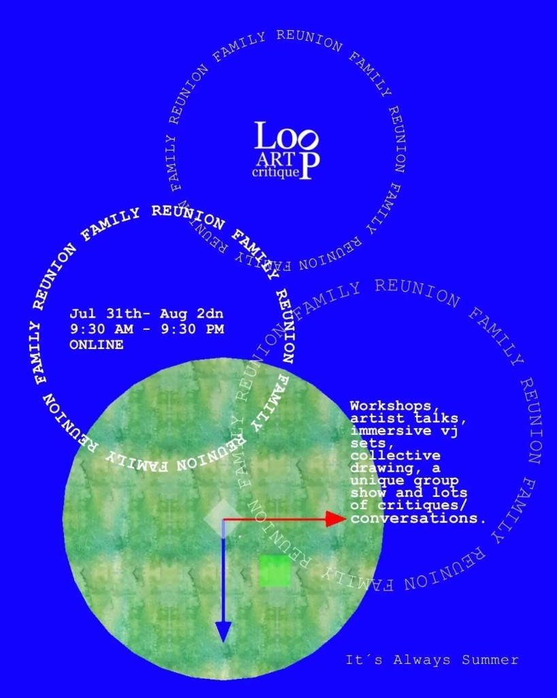

Catalog · Loop Art Critique Alumni Show #3
Alumni Show #3
Technological Counterproduction: System Misuse and Reinvention — ICA Miami & Loop Metaverse. July 2026 opening · curated by Doreen A. Ríos. Family Reunion — Loop Art Critique online · July 31 – August 2, 2026 · 9:30 AM – 9:30 PM. Listed on the main catalog.
Family Reunion · participatory gallery
- Loop Gallery — Family Reunion Friday Gallerylive · projector / wall
- Loop Gallery — Family Reunion Friday Phonelive · pocket upload

Enter the work
In concept
- Loop Alumni Show — Invisible Layer · POCwalk + code walls
- Loop Alumni Show — Invisible Layer · conceptconcept